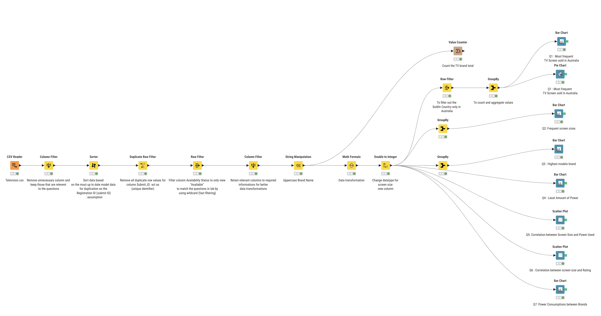
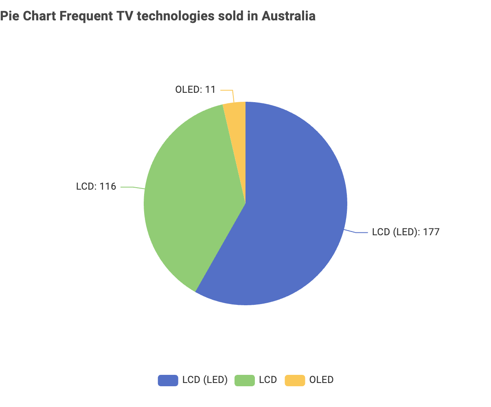
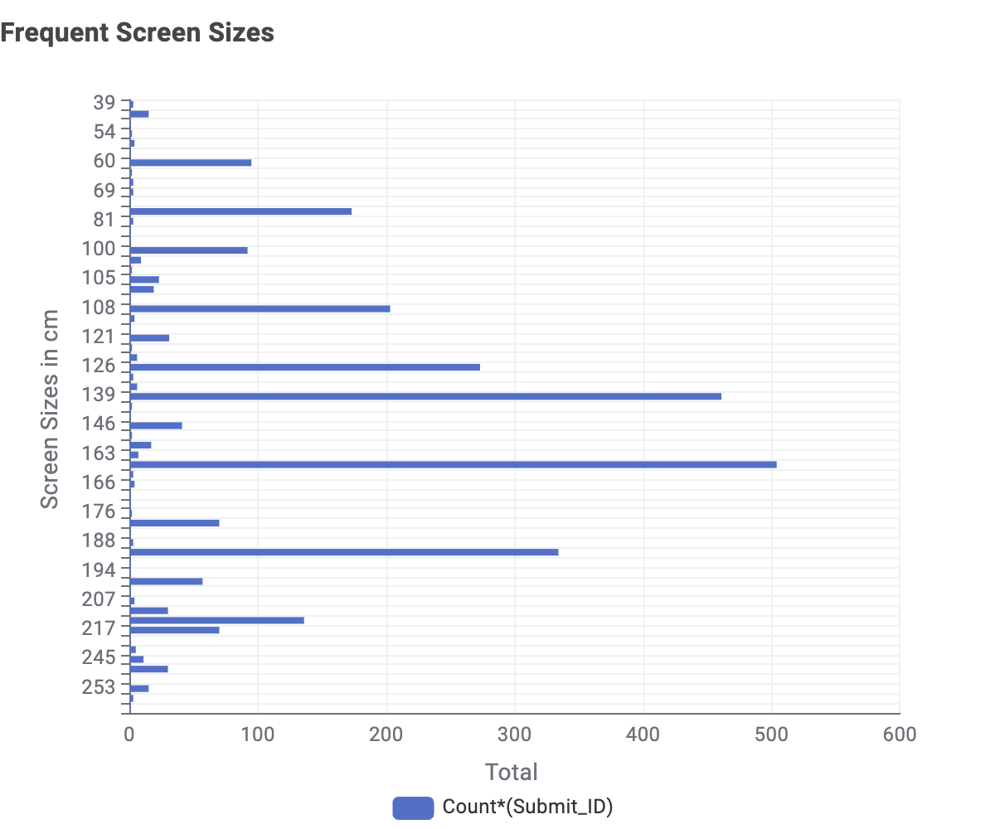
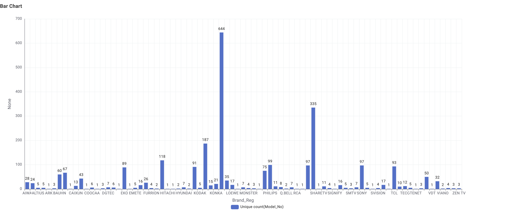
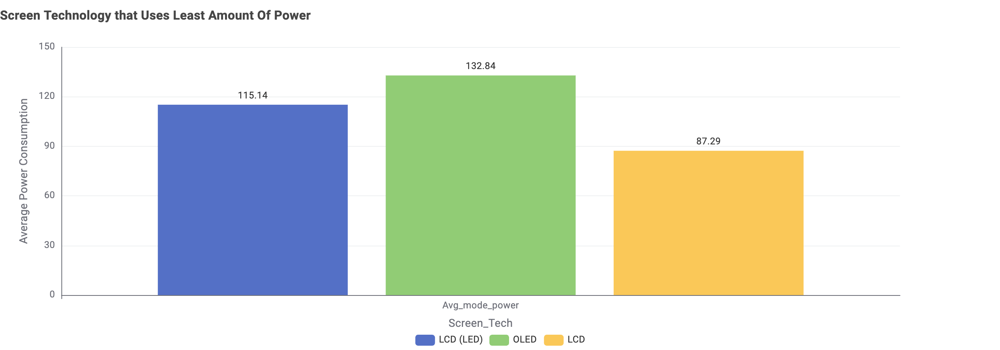
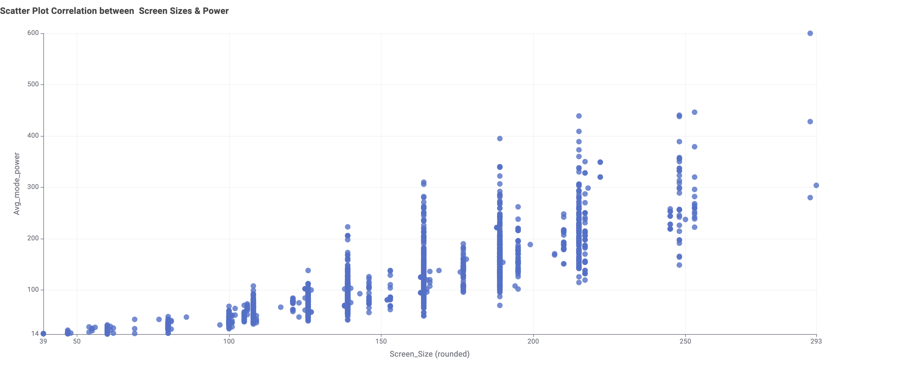
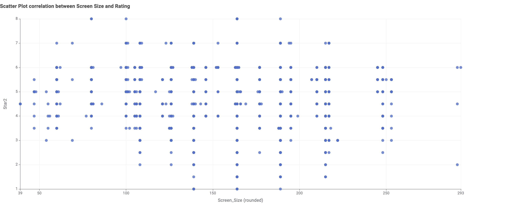

Data Processing Workflow
Methodology
Knime is used for data cleaning, data transformation and data visualisation to give insights into TV market trends across Australia based on the given questions in lab.
TV Technology Market Share in Australia
Key Insight
Market Insight: LCD (LED) technology is the most popular with 177 units sold while OLED is the least in the market with total of 11 units sold
The data reveals a strong consumer preference for budget-friendly LCD/LED technologies. This data shows that the consumers prefer affordability over premium technologies.
TV Screen Size Distribution in the Australian Market
Consumer Preference
Market Insight: The highest demand for TV Screen is at 164 cm and the average demand falls between 108 cm to 190 cm
Screen Size Distribution
The screen size analysis shows that the Australian market prefer the standard TV Screen to be in the range of between 108 CM - 190 CM with the most in-demand TV screen size is 164 CM. The average range between 108 CM - 190 CM demand of the screen sizes could be used as a practical considerations for the consumers' living room sizes and space to fit in the television.
Brand with the highest number of models in the Australian TV Market
Market Leadership
Market Insight:This data indicates that the Australian Markets prefer LG Brand when it comes to Television with it being the highest to have 644 total modules in comparison with other brands
The brand model distribution reveals a highly concentrated market where LG produced 644 models for their television production units, exceeding othe brands competitors. This information could be useful for the technology market probably due to the marketing stratergy applied by LG for their significant electronics influence in the Australian market that effect the buyers personal choice of brand.
Power Savings Analysis
Energy Performance
Key Finding: LCD technology leads in energy savings at 87.29 kWh.
Bottom Line
LCD technology offers the optimal balance of performance and energy savings, in comparison with LED and OLED technologies
Screen Sizes Correlation with Power & Rating
Correlation Analysis

Screen Size Correlation Analysis
Relationship InsightsScreen Size vs Power Consumption
Energy ImpactKey Finding: The bigger the screen size the higher the amount of energy used when active
Screen Size vs Customer Rating
Customer SatisfactionKey Finding: Small correlation but the hypothesis is : The bigger the screen size the higher the rating